Specifically, they analyze the number of hurricane fatalities, and claim that there is an effect of the femininity of the name on the number of fatalities, correcting for several possible confounders. They interpret the result as causal (including mediators), claiming that giving only male names to hurricanes would considerably reduce death toll.
The original model from the paper fits a negative binomial, using mgcv. I suppose the reason is mainly that glmmTMB was not available at the time, and implementations of the negative binomial, in particular MASS::glm.nb and lme4::glmer.nb often had convergence problems.
Confirm that you get the same results as in the paper. It makes sense to translate their model to glmmTMB. Note that the nb parameterization of mgcv corresponds to nbinom2 in glmmTMB. You will get different results when choosing nbinom1
Inspect the fitted model for potential problems, in particular perform a residual analysis of the model, including residuals against all predictors, and improve the model if you find problems.
Forget what they did. Go back to start, do a causal analysis like we did, and do your own model, diagnosing all residual problems that we discussed. Do you think there is an effect of femininity?
TipSolution
This is the model fit by Jung et al., fit with glmmTMB
Note that in the code that I gave you not all predictors were scaled (and they don’t say if they scaled in the paper), but as we are looking for main effects in the presence of interactions, we should definitely scale to improve the interpretability
now main effect is n.s.; it’s a bit dodgy, but if you read in the main paper, they do not claim a significant main effect, they mainly argue via ANOVA and significance at high values of NDAM, so let’s run an ANOVA:
car::Anova(m2)
Registered S3 method overwritten by 'car':
method from
na.action.merMod lme4
In the ANOVA we see that MasFem still n.s. but interactions, and if you would calculate effect of MasFem at high NDAM, it is significant. Something like that is argued in the paper. We can emulate this by changing NDAM centering to high NDAM, which gives us a p-value for the main effect of MasFem at high values of NDAM
Now we see the significant main effect that they report. Note, however, that the significant difference is only there for high NDAM, i.e. what we do here is to project the effect of the interaction on the main effect. An alternative to do the same thing would be an effects plot, or to specifically use predict() to calculate differences and CIs at high NDAM values.
OK, this means we can replicate the results of the paper, even if concentrating the entire analysis exclusive on high NDAM seems a bit cherry-picking. Another way to phrase the result is that we don’t find a main effect of MasFem. However, to be fair: the current results do say that there is a significant difference at high NDAM, and such a difference, if it existed, would be important.
But we haven’t done residual checks yet. Let’s do that:
res <-simulateResiduals(originalModelGAM)
Registered S3 method overwritten by 'mgcViz':
method from
+.gg ggplot2
No significant deviation in the general DHARMa plot, but residuals ~ NDAM looks funny, which was also pointed out by Bob O’Hara in a blog post after publication of the paper. Let’s try to correct this - scaling with ^0.2 does a great job:
All gone, only damage is doing the effect. This wouldn’t change with re-scaling probably, as interactions are n.s.
What if we would have fit our own model? First of all, note that if hurricane names were given randomly, we wouldn’t have to worry about confounders. However, this is not the case, hurricanes were only named randomly after 1978 or so.
plot(MasFem ~ Year, data = hurricanes)
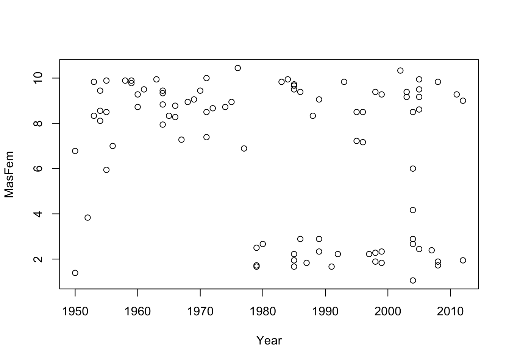
So, we could either take the earlier data out, which would remove half of our data, or we have to worry about confounding with variables that change over time. The most obvious thing would be to take time itself (Year) in the model, to correct for temporal confounding.
Do we need other variables that are not confounders? There are two reasons to add them:
they have strong effects on the response - not adding them could lead to residual problems and increase residual variance, which increases uncertainties and cost power
we want to fit interactions.
I added NDAM to the model, because we saw earlier that it has a strong effect. I think it’s not unreasonable to check for an interaction as well.
As we have several observations per year, a conservative approach would be to add a RE on year. Note that we use year both as a fixed effect (to remove temporal trends) and a random intercept, which is perfectly fine, however.
newModel =glmmTMB(alldeaths ~scale(MasFem) *scale(NDAM^0.2) + Year + (1|Year),data = hurricanes, family = nbinom2)summary(newModel)
Family: nbinom2 ( log )
Formula:
alldeaths ~ scale(MasFem) * scale(NDAM^0.2) + Year + (1 | Year)
Data: hurricanes
AIC BIC logLik -2*log(L) df.resid
630.8 648.4 -308.4 616.8 85
Random effects:
Conditional model:
Groups Name Variance Std.Dev.
Year (Intercept) 2.571e-07 0.0005071
Number of obs: 92, groups: Year, 49
Dispersion parameter for nbinom2 family (): 1.11
Conditional model:
Estimate Std. Error z value Pr(>|z|)
(Intercept) -2.542287 12.730846 -0.200 0.842
scale(MasFem) 0.073207 0.119273 0.614 0.539
scale(NDAM^0.2) 1.309624 0.118106 11.089 <2e-16 ***
Year 0.002426 0.006423 0.378 0.706
scale(MasFem):scale(NDAM^0.2) 0.179874 0.117191 1.535 0.125
---
Signif. codes: 0 '***' 0.001 '**' 0.01 '*' 0.05 '.' 0.1 ' ' 1
The results remain that there is no effect of MasFem!
C.2 Researcher Degrees of Freedom — Skin Color and Red Cards
In 2018 Silberzahn et al. published a “meta-analysis” in Advances in Methods and Practices in Psychological Science, where they had provided 29 teams with the same data set to answer one research question: “[W]hether soccer players with dark skin tone are more likely than those with light skin tone to receive red cards from referees”.
Spoiler: They found that the “[a]nalytic approaches varied widely across the teams, and the estimated effect sizes ranged from 0.89 to 2.93 (Mdn = 1.31) in odds-ratio units”, highlighting that different approaches in data analysis can yield significant variation in the results.
Task: Do a re-analysis of the data as if you were the 30th team to contribute the results to the meta-analysis. You can find the data in the ecodata package, dataset redCards.
Response variable: ‘redCards’ (+‘yellowReds’?).
primary predictors: ‘rater1’, ‘rater2’
Multiple variables, potentially accounting for confounding, offsetting, grouping, … are included in the data.
The rater variable contains ratings of “two independent raters blind to the research question who, based on their profile photo, categorized players on a 5-point scale ranging from (1) very light skin to (5) very dark skin. Make sure that ‘rater1’ and ‘rater2’ are rescaled to the range 0 … 1 as described in the paper (”This variable was rescaled to be bounded by 0 (very light skin) and 1 (very dark skin) prior to the final analysis, to ensure consistency of effect sizes across the teams of analysts. The raw ratings were rescaled to 0, .25, .50, .75, and 1 to create this new scale.”)
When you’re done, have a look at the other modelling teams. Do you understand the models they fit? Note that the results are displayed in terms of odd ratios. Are your results within the range of estimates from the 29 teams in Silberzahn et al. (2018)?
TipBase model
There is no single “correct” analysis - that is the whole point of Silberzahn et al. The following is therefore not a fully worked-out solution, but one defensible base model to start from. Each row is a player-referee dyad, so red cards are a count out of the number of games the two shared; we use that as exposure via a log offset, take the mean of the two skin-tone ratings rescaled to 0-1 as the predictor, and add random effects for player and referee to respect the non-independence.
library(EcoData); library(glmmTMB); library(DHARMa)d = redCardsd$skin = ((d$rater1 + d$rater2)/2-1) /4# mean rating, rescaled to 0..1d = d[!is.na(d$skin) & d$games >0, ]m =glmmTMB(redCards ~ skin + (1|playerShort) + (1|refNum),offset =log(games), family = poisson, data = d)summary(m)
exp(fixef(m)$cond["skin"]) # rate ratio, darkest (1) vs lightest (0) skin
skin
3.73754
res =simulateResiduals(m); plot(res); testDispersion(res)
DHARMa:testOutliers with type = binomial may have inflated Type I error rates for integer-valued distributions. To get a more exact result, it is recommended to re-run testOutliers with type = 'bootstrap'. See ?testOutliers for details
plotResiduals() for datasets larger than 10,000 displays a spline instead of quantile regression lines for the sake of speed. To switch back to quantile regression lines, use the argument quantreg = T and have in mind that the function may take a while to compute and display the lines.
DHARMa:testOutliers with type = binomial may have inflated Type I error rates for integer-valued distributions. To get a more exact result, it is recommended to re-run testOutliers with type = 'bootstrap'. See ?testOutliers for details
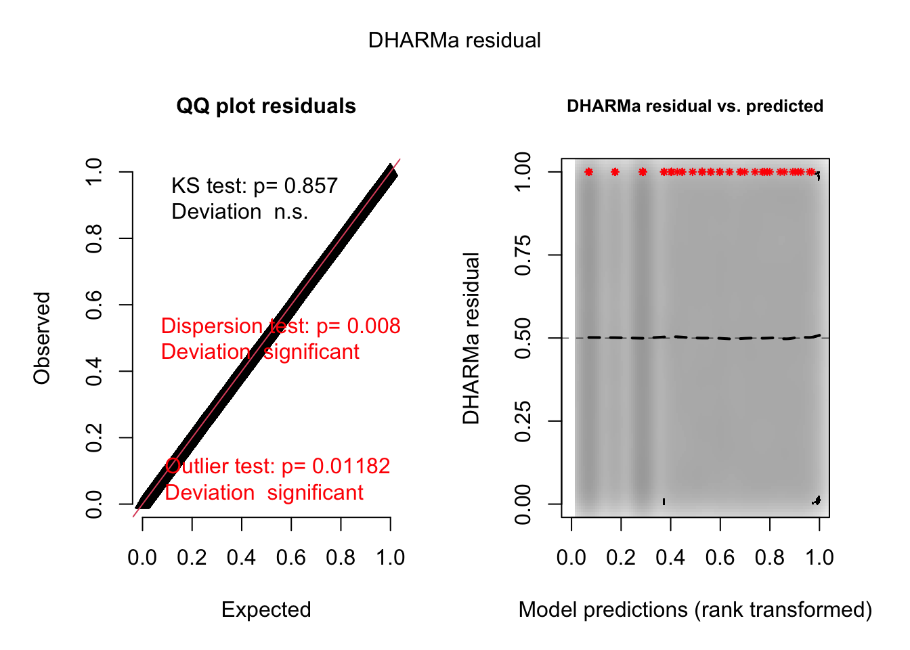
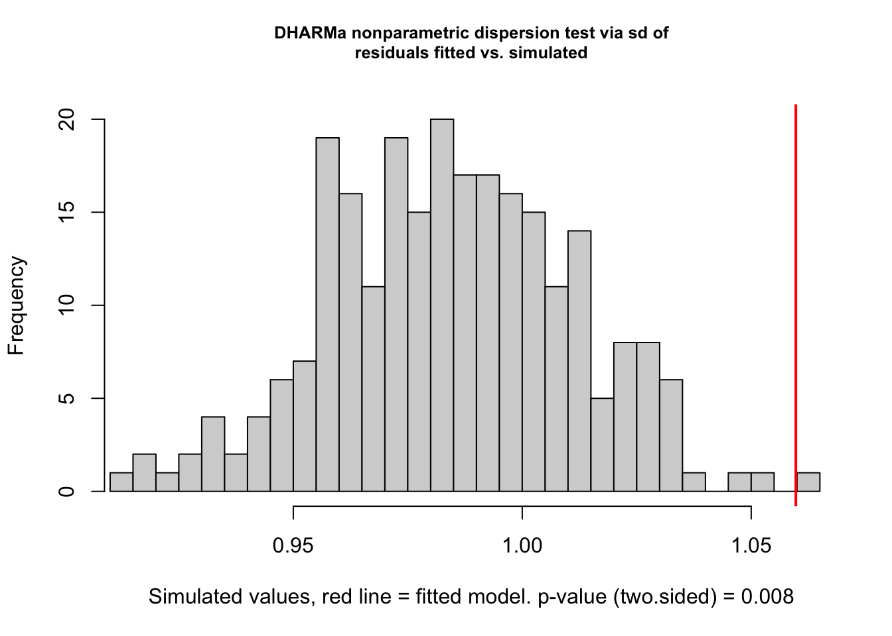
DHARMa nonparametric dispersion test via sd of residuals fitted vs.
simulated
data: simulationOutput
dispersion = 1.0768, p-value = 0.008
alternative hypothesis: two.sided
The exponentiated skin coefficient is our effect in rate-ratio units (comparable to the paper’s odds ratios). Compare it to the 0.89-2.93 range of odds ratios reported across the 29 teams. This bare model actually gives a somewhat higher estimate, which nicely illustrates the point of the study: the “researcher degrees of freedom” (choice of exposure, random-effect structure, which rater, count vs. binomial, and - crucially - which confounders are included) move the result substantially. From this base model, you would go on to check residuals and dispersion and to add plausible confounders (league, playing position, player skill, …), which typically pulls the estimate towards the reported range.
C.3 Scouting Ants
Look at the dataset EcoData::scoutingAnts, and find out if there are really scouting ants in Lasius niger.
Together with the orientation of the Maze, this makes 3 possible directional confounders, and the main predictor (if the Ant went to the pheromone in the first visit).
Adding an RE on colony is logical, and then let’s run the model:
library(lme4)
Loading required package: Matrix
Attaching package: 'lme4'
The following object is masked from 'package:nlme':
lmList
The following object is masked from 'package:DHARMa':
getData
Generalized linear mixed model fit by maximum likelihood (Laplace
Approximation) [glmerMod]
Family: binomial ( logit )
Formula: went.phero ~ ant_group_main + directionConst + directionPhero +
Orientation + (1 | Colony)
Data: dat
AIC BIC logLik -2*log(L) df.resid
2192.5 2225.7 -1090.2 2180.5 1869
Scaled residuals:
Min 1Q Median 3Q Max
-4.6870 -1.0451 0.4836 0.6876 1.0318
Random effects:
Groups Name Variance Std.Dev.
Colony (Intercept) 0.9284 0.9636
Number of obs: 1875, groups: Colony, 15
Fixed effects:
Estimate Std. Error z value Pr(>|z|)
(Intercept) 1.9505 0.3330 5.857 4.72e-09 ***
ant_group_mainSecondvisit_1st_to_phero 0.1311 0.1248 1.050 0.29352
directionConstTRUE -1.1465 0.2409 -4.760 1.94e-06 ***
directionPheroright -0.5680 0.1984 -2.863 0.00420 **
Orientationright -0.3493 0.1222 -2.859 0.00425 **
---
Signif. codes: 0 '***' 0.001 '**' 0.01 '*' 0.05 '.' 0.1 ' ' 1
Correlation of Fixed Effects:
(Intr) a__S_1 dCTRUE drctnP
ant_g_S_1__ -0.252
drctnCnTRUE -0.413 -0.062
drctnPhrrgh -0.441 -0.001 0.306
Orinttnrght -0.182 -0.093 -0.074 0.085
Surprisingly, we find large effects of the other variables. Because of these large effects, we also test for interactions with the experimental treatment
We now find that there is an interaction with the main predictor, and there could be effects. We can also look at this visually.
plot(allEffects(fit2))
The results are difficult to interpret. I would think that there was some bias in the experiment, which led to an effect of the Maze direction, which then creates a spill-over to the other (and in particular the main) predictors.
For our education, we can also look at the residual plots. I will use fit1, because there was a misfit:
res <-simulateResiduals(fit1, plot = T)
DHARMa:testOutliers with type = binomial may have inflated Type I error rates for integer-valued distributions. To get a more exact result, it is recommended to re-run testOutliers with type = 'bootstrap'. See ?testOutliers for details
DHARMa:testOutliers with type = binomial may have inflated Type I error rates for integer-valued distributions. To get a more exact result, it is recommended to re-run testOutliers with type = 'bootstrap'. See ?testOutliers for details
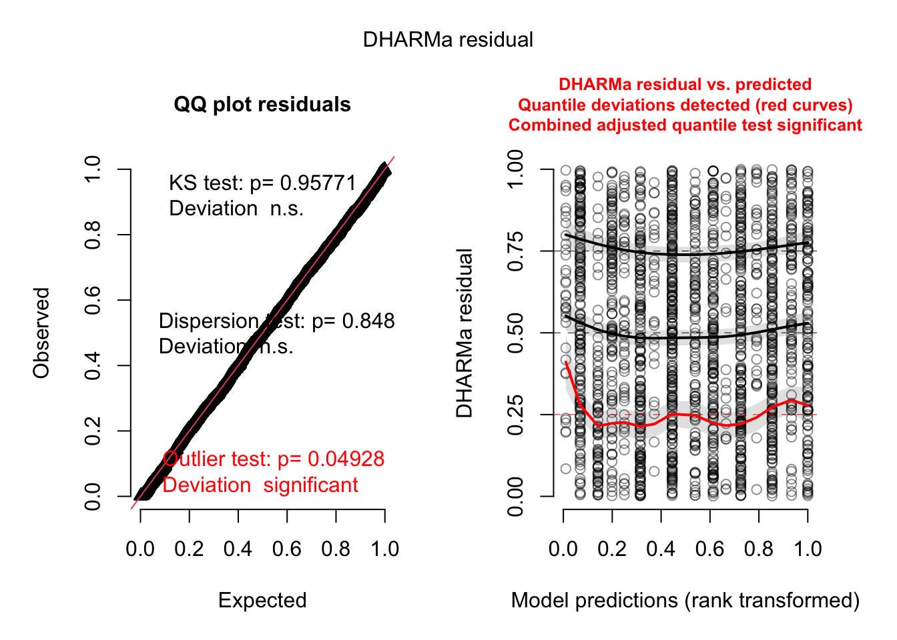
As we would expect significant interactions, we would probably see something if we plot residuals against predictors or their interactions, but I want to show you something else:
We will not see dispersion problems in a 0/1 binomial, but actually, this is a k/n binomial, just that the data are not prepared as such.
Either way, in DHARMa, you can aggregate residuals by a grouping variable.
res2 <-recalculateResiduals(res, group = dat$Colony)
Now, we essentially check k/n data, and we see that there is overdispersion, which is caused by the misfit.
plot(res2)
DHARMa:testOutliers with type = binomial may have inflated Type I error rates for integer-valued distributions. To get a more exact result, it is recommended to re-run testOutliers with type = 'bootstrap'. See ?testOutliers for details
DHARMa:testOutliers with type = binomial may have inflated Type I error rates for integer-valued distributions. To get a more exact result, it is recommended to re-run testOutliers with type = 'bootstrap'. See ?testOutliers for details
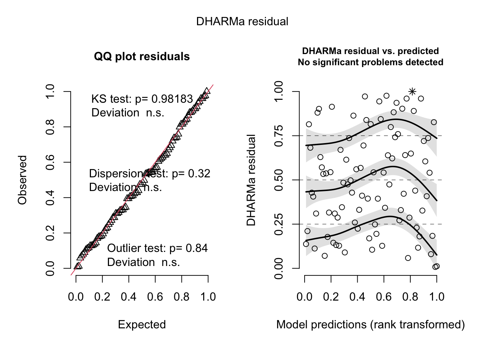
testDispersion(res2)
DHARMa nonparametric dispersion test via sd of residuals fitted vs.
simulated
data: simulationOutput
dispersion = 1.0233, p-value = 0.832
alternative hypothesis: two.sided
Let’s do the same for model 2, which included the interactions.
res <-simulateResiduals(fit2, plot = T)
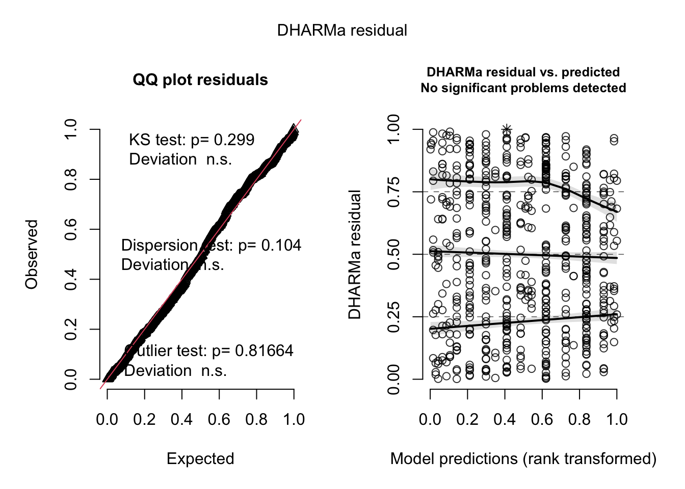
res2 <-recalculateResiduals(res, group = dat$Colony)plot(res2)
DHARMa:testOutliers with type = binomial may have inflated Type I error rates for integer-valued distributions. To get a more exact result, it is recommended to re-run testOutliers with type = 'bootstrap'. See ?testOutliers for details
DHARMa:testOutliers with type = binomial may have inflated Type I error rates for integer-valued distributions. To get a more exact result, it is recommended to re-run testOutliers with type = 'bootstrap'. See ?testOutliers for details
Warning in newton(lsp = lsp, X = G$X, y = G$y, Eb = G$Eb, UrS = G$UrS, L = G$L,
: Fitting terminated with step failure - check results carefully
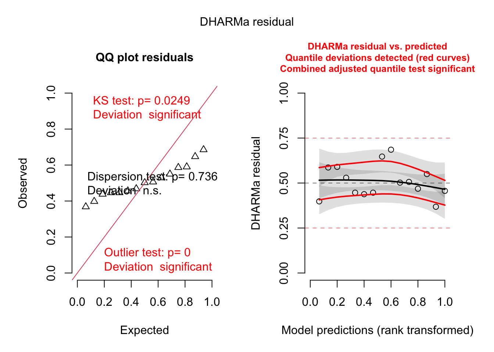
testDispersion(res2)
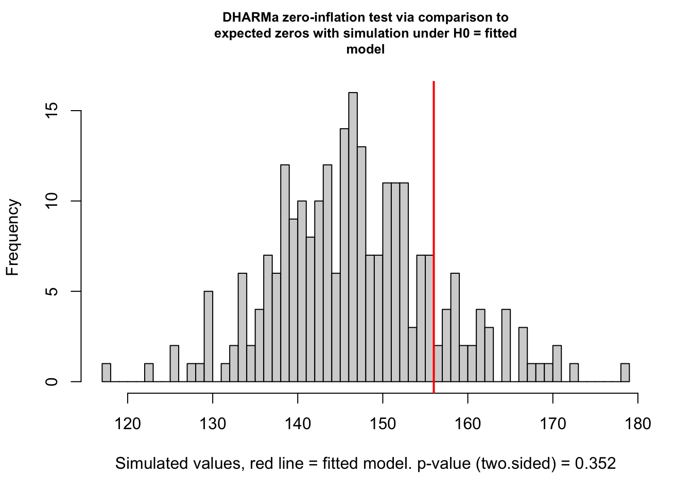
DHARMa nonparametric dispersion test via sd of residuals fitted vs.
simulated
data: simulationOutput
dispersion = 1.0422, p-value = 0.736
alternative hypothesis: two.sided
Which largely removes the problem!
C.4 Owls
Look at the Owl data set in the glmmTMB package. The initial hypothesis is
The offset is a special command that can be used in all regression models. It means that we include an effect with effect size 1.
The offset has a special importance in models with a log link function, because with these models, we have y = exp(x …), so if you do y = exp(x + log(BroodSize) ) and use exp rules, this is y = exp(x) * exp(log(BroodSize)) = y = exp(x) * BroodSize, so this makes the response proportional to BroodSize. This trick is often used in log link GLMs to make the response proportional to Area, Sampling effort, etc.
Task: try to improve the model with everything we have discussed so far.
DHARMa nonparametric dispersion test via sd of residuals fitted vs.
simulated
data: simulationOutput
dispersion = 0.87257, p-value = 0.192
alternative hypothesis: two.sided
testZeroInflation(m1)
DHARMa zero-inflation test via comparison to expected zeros with
simulation under H0 = fitted model
data: simulationOutput
ratioObsSim = 1.0594, p-value = 0.352
alternative hypothesis: two.sided
TipSolution using brms
This is not adding dispersion and zero-inflation yet, just to show how such a model could be fit with brms
library(brms)m2 = brms::brm(SiblingNegotiation ~ FoodTreatment * SexParent+ (1|Nest) +offset(log(BroodSize)), data = Owls , family = negbinomial)
Look at the Snails data set in the EcoData package, and find out which environmental and/or seasonal predictors i) explain the total abundance and ii) the infection rate of the three species.
The snails data set in the EcoData package includes observations on the distribution of freshwater snails and their infection rates ( schistosomiasis (a parasite)).
The first scientific question is that their abundance depends on the water conditions. The second scientific question is that their infection rate depends on the water conditions and seasonal factors
The data also contains data on other environmental (and seasonal factors). You should consider if it is useful to add them to the analysis.
Species: BP_tot, BF_tot, BT_tot
Number of infected individuals: BP_pos_tot, BF_pos_tot, BT_pos_tot
Total abundances of BP species: Bulinus_tot
Total number of infected in BP species: Bulinus_pos_tot
Tasks:
Model the summed total abundance of the three species (Bulinus_tot)
Model the infection rate of all three species (Bulinus_pos_tot) (k/n binomial)
Optional: Model the species individually (BP_tot, BF_tot, BT_tot)
Optional: Fit a multivariate (joint) species distribution model
Our hypothesis is that the abundance of Bulinus species depends on the water characteristics, e.g. site_type, Temp_water, pH, Cond, swmo_prec, water_speed_ms, and water_depth. We will set the length of the collection duration as an offset.
As the sites are nested within localities, we will set a nested random intercept on site_irn within locality. Also potential confounders are collection date (coll_date), the season (wet or dry months, seas_wmo), year, and maybe other environmental factors such as the air temperature?.
Correlation matrix not shown by default, as p = 15 > 12.
Use print(x, correlation=TRUE) or
vcov(x) if you need it
Check residuals:
res =simulateResiduals(model2, plot =TRUE)
DHARMa:testOutliers with type = binomial may have inflated Type I error rates for integer-valued distributions. To get a more exact result, it is recommended to re-run testOutliers with type = 'bootstrap'. See ?testOutliers for details
DHARMa:testOutliers with type = binomial may have inflated Type I error rates for integer-valued distributions. To get a more exact result, it is recommended to re-run testOutliers with type = 'bootstrap'. See ?testOutliers for details
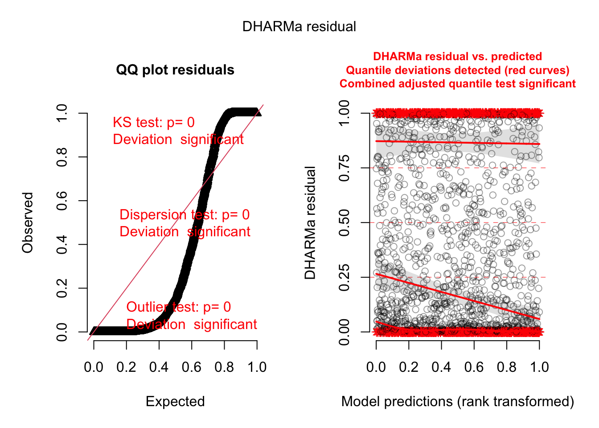
Does not look great -> dispersion problems -> switch to -> negative binomial distribution:
DHARMa nonparametric dispersion test via sd of residuals fitted vs.
simulated
data: simulationOutput
dispersion = 0.50462, p-value = 0.016
alternative hypothesis: two.sided
testZeroInflation(res)
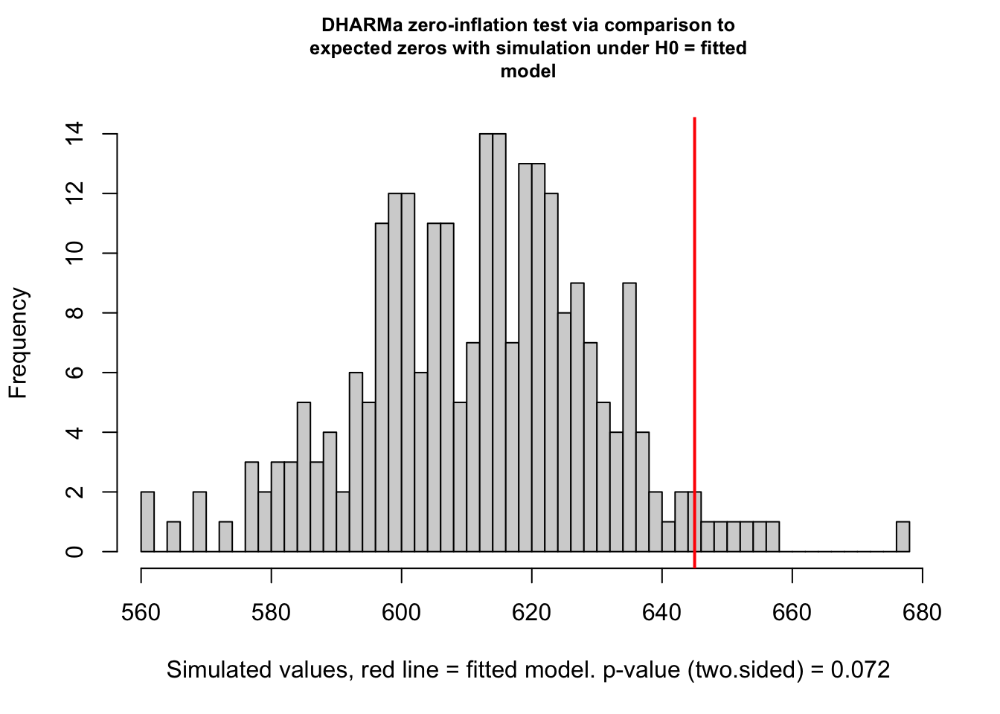
DHARMa zero-inflation test via comparison to expected zeros with
simulation under H0 = fitted model
data: simulationOutput
ratioObsSim = 1.0533, p-value = 0.072
alternative hypothesis: two.sided
We detrended space there could be spatial autocorrelation, let’s check for it:
## Spatialres2 =recalculateResiduals(res, group =c(data$site_irn))groupLocations =aggregate(cbind(data$sLat, data$sLon ), list( data$site_irn), mean)testSpatialAutocorrelation(res2, x = groupLocations$V1, y = groupLocations$V2)
DHARMa Moran's I test for distance-based autocorrelation
data: res2
observed = -0.020353, expected = -0.011364, sd = 0.066883, p-value =
0.8931
alternative hypothesis: Distance-based autocorrelation
Significant! Let’s add a spatial correlation structure:
Conditional simulations are not yet implemented for glmmTMB models with certain (spatial) covariance structures. DHARMa will fall back to unconditional simulations for your model.
DHARMa:testOutliers with type = binomial may have inflated Type I error rates for integer-valued distributions. To get a more exact result, it is recommended to re-run testOutliers with type = 'bootstrap'. See ?testOutliers for details
DHARMa:testOutliers with type = binomial may have inflated Type I error rates for integer-valued distributions. To get a more exact result, it is recommended to re-run testOutliers with type = 'bootstrap'. See ?testOutliers for details
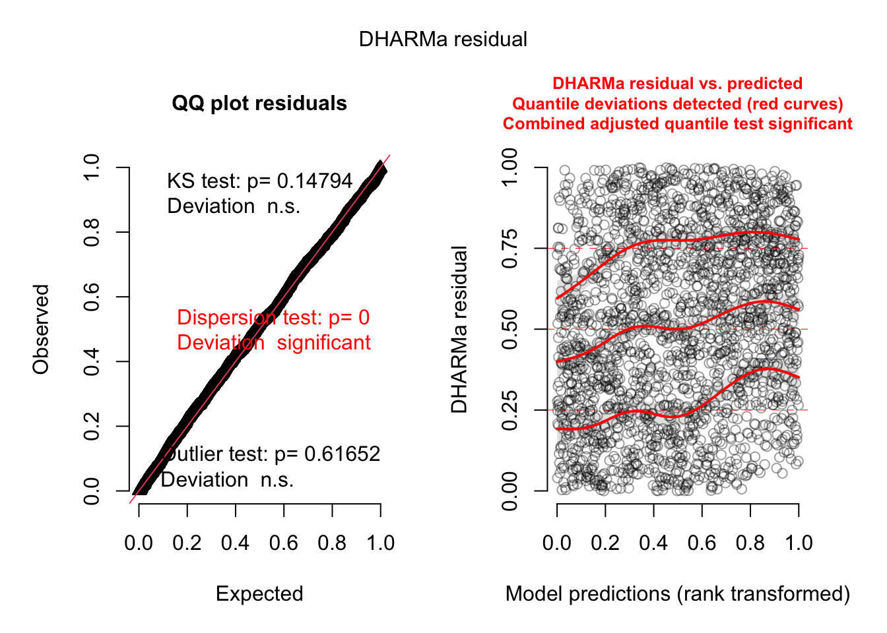
glmmTMB does not support conditional simulations but we can create conditional simulations on our own:
pred =predict(model5, re.form =NULL, type ="response")pred_dispersion =predict(model5, re.form =NULL, type ="disp")simulations =sapply(1:1000, function(i) rnbinom(length(pred),size = pred_dispersion, mu = pred))res =createDHARMa(simulations, model.frame(model5)[,1], pred)plot(res)
Residuals do not look perfect but I would say that we can stop here now.
DHARMa:testOutliers with type = binomial may have inflated Type I error rates for integer-valued distributions. To get a more exact result, it is recommended to re-run testOutliers with type = 'bootstrap'. See ?testOutliers for details
DHARMa:testOutliers with type = binomial may have inflated Type I error rates for integer-valued distributions. To get a more exact result, it is recommended to re-run testOutliers with type = 'bootstrap'. See ?testOutliers for details
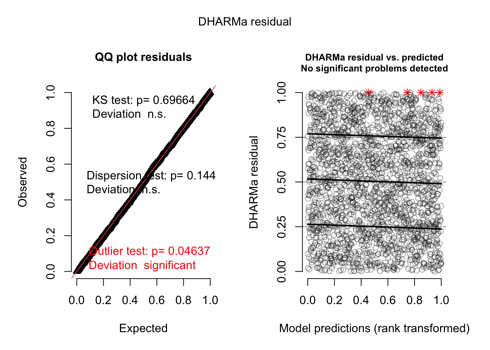
We have dispersion problems, but we cannot model the dispersion for binomial models.
Check for spatial autocorrelation:
## Spatialres2 =recalculateResiduals(res, group =c(data$site_irn))groupLocations =aggregate(cbind(data$sLat, data$sLon ), list( data$site_irn), mean)testSpatialAutocorrelation(res2, x = groupLocations$V1, y = groupLocations$V2)
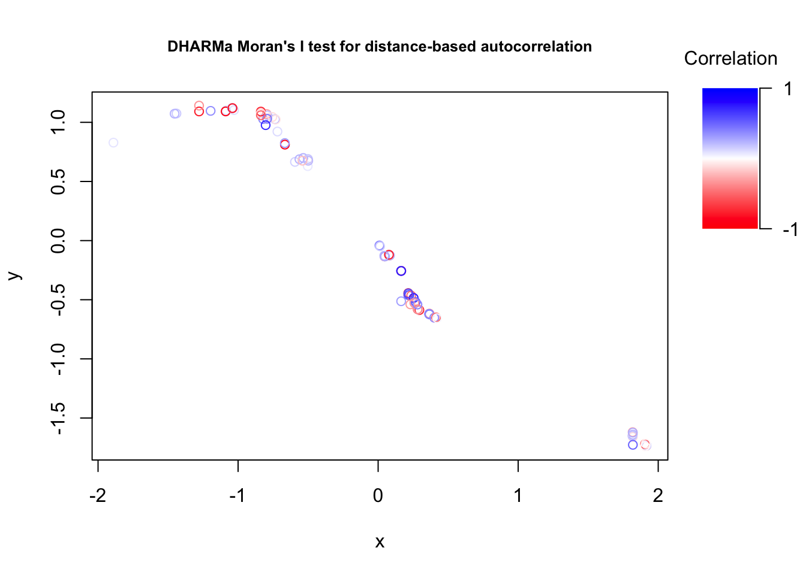
DHARMa Moran's I test for distance-based autocorrelation
data: res2
observed = -0.067736, expected = -0.011364, sd = 0.066712, p-value =
0.3981
alternative hypothesis: Distance-based autocorrelation
Significant! Let’s correct for spatial autocorrelation with a correlation structure:
Conditional simulations are not yet implemented for glmmTMB models with certain (spatial) covariance structures. DHARMa will fall back to unconditional simulations for your model.
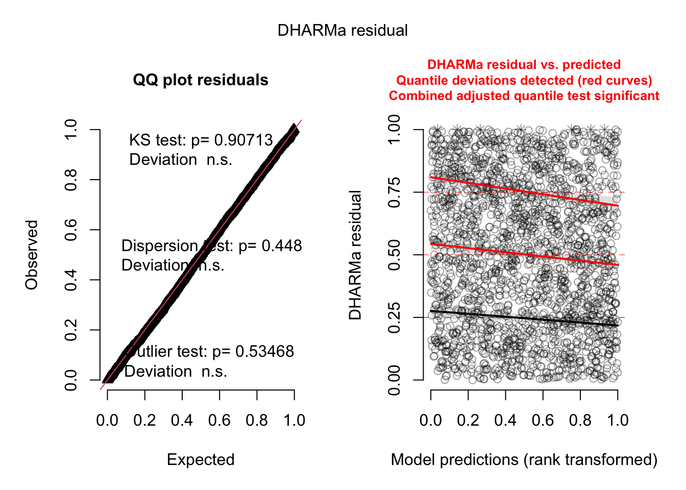
They look good now!
TipSolution of multivariate (joint) species distribution model
The species models are connected by their response to latent variable (unobserved environment). For that, we will transform our dataset with respect to species from wide (sp1, sp2, sp3) to long format (species abundances in one column and a second column telling us the group (species)). In the model then, we will separate the species and their responses by using ~0+Species + Species:(predictors).
The latent variable structure is set by the rr(…) object in the formula:
Conditional simulations are not yet implemented for glmmTMB models with certain (spatial) covariance structures. DHARMa will fall back to unconditional simulations for your model.
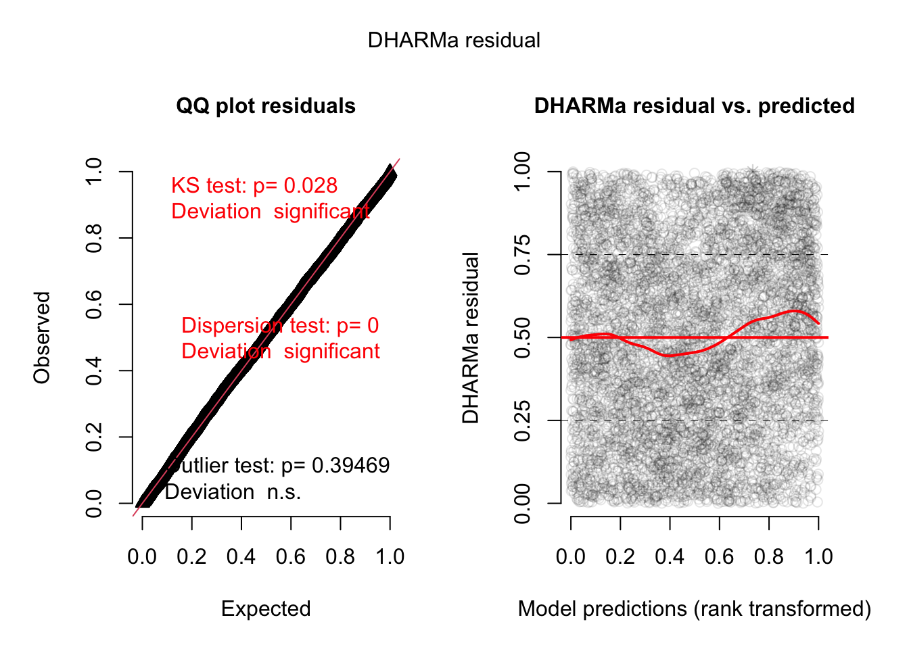
Conditional residuals:
pred =predict(modelJoint, re.form =NULL, type ="response")pred_dispersion =predict(modelJoint, re.form =NULL, type ="disp")simulations =sapply(1:1000, function(i) rnbinom(length(pred),size = pred_dispersion, mu = pred))res =createDHARMa(simulations, model.frame(modelJoint)[,1], pred)plot(res)
Warning in checkConv(attr(opt, "derivs"), opt$par, ctrl = control$checkConv, : Model failed to converge with max|grad| = 0.00691219 (tol = 0.002, component 1)
See ?lme4::convergence and ?lme4::troubleshooting.
summary(model1)
Generalized linear mixed model fit by maximum likelihood (Laplace
Approximation) [glmerMod]
Family: binomial ( logit )
Formula: SBPA ~ sSeedMass + sSeedShape + sSeedN + sAltitude + sHum + (1 |
Site) + (sAltitude | Species)
Data: data
AIC BIC logLik -2*log(L) df.resid
1368.9 1423.4 -674.4 1348.9 1719
Scaled residuals:
Min 1Q Median 3Q Max
-2.5936 -0.2658 -0.1017 0.2001 3.3347
Random effects:
Groups Name Variance Std.Dev. Corr
Species (Intercept) 8.16725 2.8578
sAltitude 4.38865 2.0949 -0.13
Site (Intercept) 0.06798 0.2607
Number of obs: 1729, groups: Species, 152; Site, 17
Fixed effects:
Estimate Std. Error z value Pr(>|z|)
(Intercept) -2.6285 0.4066 -6.465 1.01e-10 ***
sSeedMass -1.3670 0.6431 -2.126 0.0335 *
sSeedShape -0.5813 0.3100 -1.875 0.0608 .
sSeedN -2.1359 1.3165 -1.622 0.1047
sAltitude -1.3935 0.3364 -4.142 3.44e-05 ***
sHum -0.1025 0.1308 -0.784 0.4330
---
Signif. codes: 0 '***' 0.001 '**' 0.01 '*' 0.05 '.' 0.1 ' ' 1
Correlation of Fixed Effects:
(Intr) sSdMss sSdShp sSeedN sAlttd
sSeedMass 0.221
sSeedShape 0.033 0.062
sSeedN 0.336 0.060 -0.066
sAltitude 0.132 0.142 0.079 0.012
sHum 0.023 0.002 -0.003 -0.011 0.229
optimizer (Nelder_Mead) convergence code: 0 (OK)
Model failed to converge with max|grad| = 0.00691219 (tol = 0.002, component 1)
See ?lme4::convergence and ?lme4::troubleshooting.
Model did not converge, but there is a trick which often helps. The default optimizer in lme4 is not the best optimizer, changing it to ‘bobyqa’ often helps with convergence issues
Generalized linear mixed model fit by maximum likelihood (Laplace
Approximation) [glmerMod]
Family: binomial ( logit )
Formula: SBPA ~ sSeedMass + sSeedShape + sSeedN + sAltitude + sHum + (1 |
Site) + (sAltitude | Species)
Data: data
Control: glmerControl(optimizer = "bobyqa")
AIC BIC logLik -2*log(L) df.resid
1368.9 1423.4 -674.4 1348.9 1719
Scaled residuals:
Min 1Q Median 3Q Max
-2.5938 -0.2658 -0.1018 0.2001 3.3353
Random effects:
Groups Name Variance Std.Dev. Corr
Species (Intercept) 8.16321 2.8571
sAltitude 4.38183 2.0933 -0.13
Site (Intercept) 0.06786 0.2605
Number of obs: 1729, groups: Species, 152; Site, 17
Fixed effects:
Estimate Std. Error z value Pr(>|z|)
(Intercept) -2.6284 0.4066 -6.465 1.01e-10 ***
sSeedMass -1.3693 0.6437 -2.127 0.0334 *
sSeedShape -0.5816 0.3100 -1.876 0.0606 .
sSeedN -2.1419 1.3182 -1.625 0.1042
sAltitude -1.3920 0.3362 -4.141 3.46e-05 ***
sHum -0.1022 0.1307 -0.781 0.4345
---
Signif. codes: 0 '***' 0.001 '**' 0.01 '*' 0.05 '.' 0.1 ' ' 1
Correlation of Fixed Effects:
(Intr) sSdMss sSdShp sSeedN sAlttd
sSeedMass 0.222
sSeedShape 0.033 0.062
sSeedN 0.337 0.061 -0.066
sAltitude 0.132 0.142 0.079 0.012
sHum 0.023 0.002 -0.003 -0.011 0.229
Success, it converged!
Residual checks:
Check residuals:
res =simulateResiduals(model1, plot=TRUE)
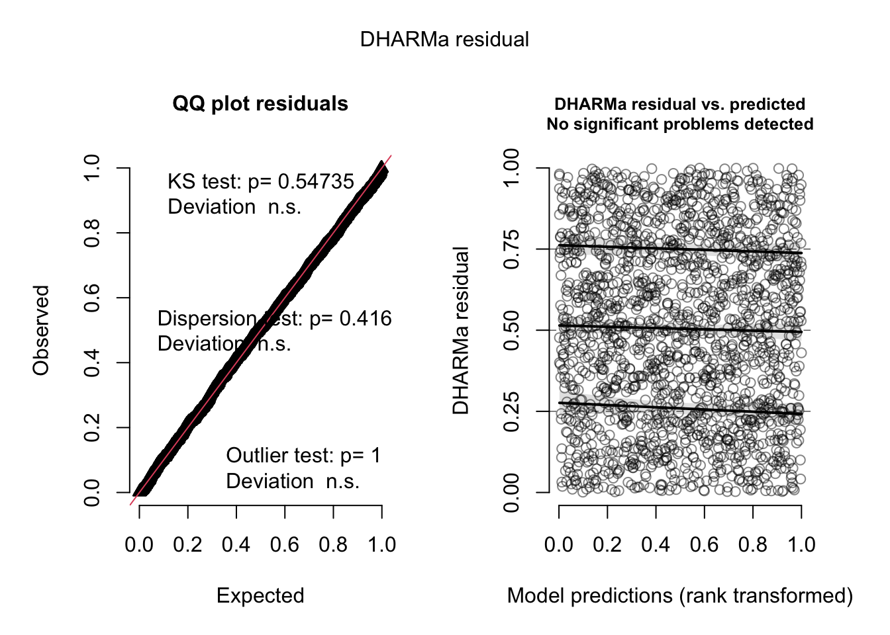
Residuals look good!
Bonus: With phylogenetic correlation structure:
dist_phylo = ape::cophenetic.phylo(phyl.upd2) # create distance matrixcorrelation_matrix =vcv(phyl.upd2)[unique(data$Species), unique(data$Species)]####the following code was taken from https://github.com/glmmTMB/glmmTMB/blob/master/misc/fixcorr.rmdas.theta.vcov <-function(Sigma,corrs.only=FALSE) { logsd <-log(diag(Sigma))/2 cr <-cov2cor(Sigma) cc <-chol(cr) cc <- cc %*%diag(1/diag(cc)) corrs <- cc[upper.tri(cc)]if (corrs.only) return(corrs) ret <-c(logsd,corrs)return(ret)}corrs =as.theta.vcov(correlation_matrix, corrs.only=TRUE)#####data$dummy =factor(rep(0, nrow(data)))nsp =length(unique(data$Species))model6 =glmmTMB(SBPA~ sSeedMass + sSeedShape + sSeedN + sAltitude + sHum + (1|Site) + (sAltitude|Species) + (1+Species|dummy),map=list(theta=factor(c(rep(0, 4), rep(1,nsp),rep(NA,length(corrs))) )),start=list(theta=c(rep(0, 4), rep(0,nsp),corrs)),family = binomial,data = data)simulateResiduals(model6, plot =TRUE)
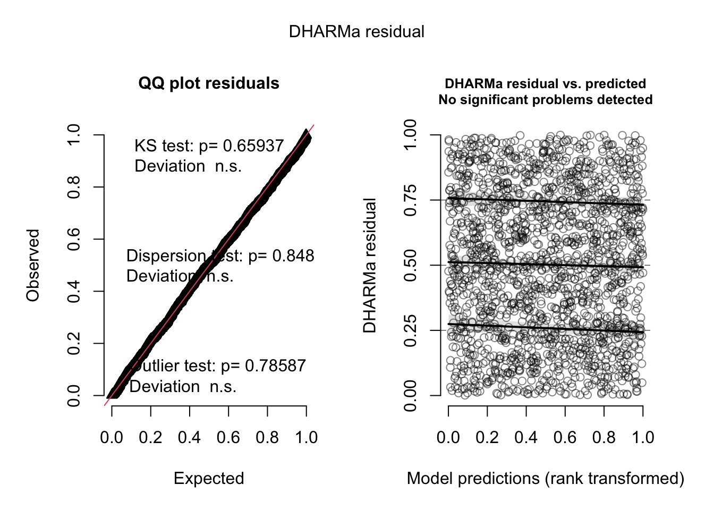
Object of Class DHARMa with simulated residuals based on 250 simulations with refit = FALSE . See ?DHARMa::simulateResiduals for help.
Scaled residual values: 0.5748496 0.5526574 0.05684348 0.6166831 0.1098403 0.2653392 0.2043353 0.531952 0.3925722 0.2693407 0.07212984 0.2086342 0.4148425 0.5437874 0.5376287 0.2171818 0.7868062 0.3029527 0.5870516 0.7049796 ...
Conditional simulations:
pred =predict(model6, re.form =NULL, type ="response")simulations =sapply(1:1000, function(i) rbinom(length(pred),1, pred))res =createDHARMa(simulations, model.frame(model6)[,1], pred)plot(res)
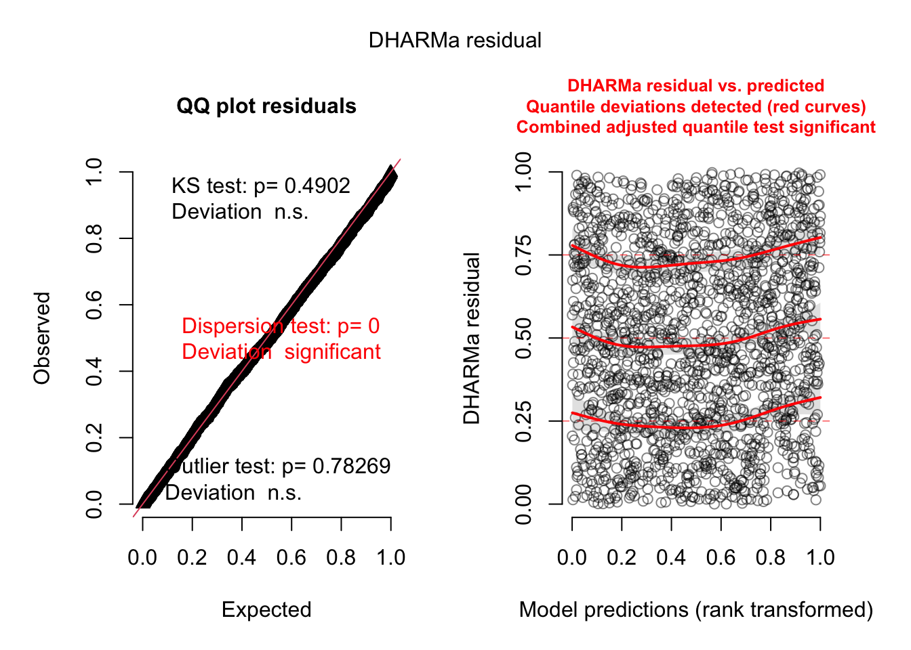
C.7 Snouter
Fit one of the responses in the snouter dataset against the predictors rain + djungle (see ?snouter). Check for spatial autocorrelation and proceed to fitting a spatial model if needed. See the data set’s help for details on the variables.
library(EcoData)str(snouter)
TipSolution
Fit a base model, then check its residuals for spatial autocorrelation. We use snouter1.1 (a continuous response) here; the coordinates in this dataset are X and Y:
testSpatialAutocorrelation(res, x = snouter$X, y = snouter$Y)
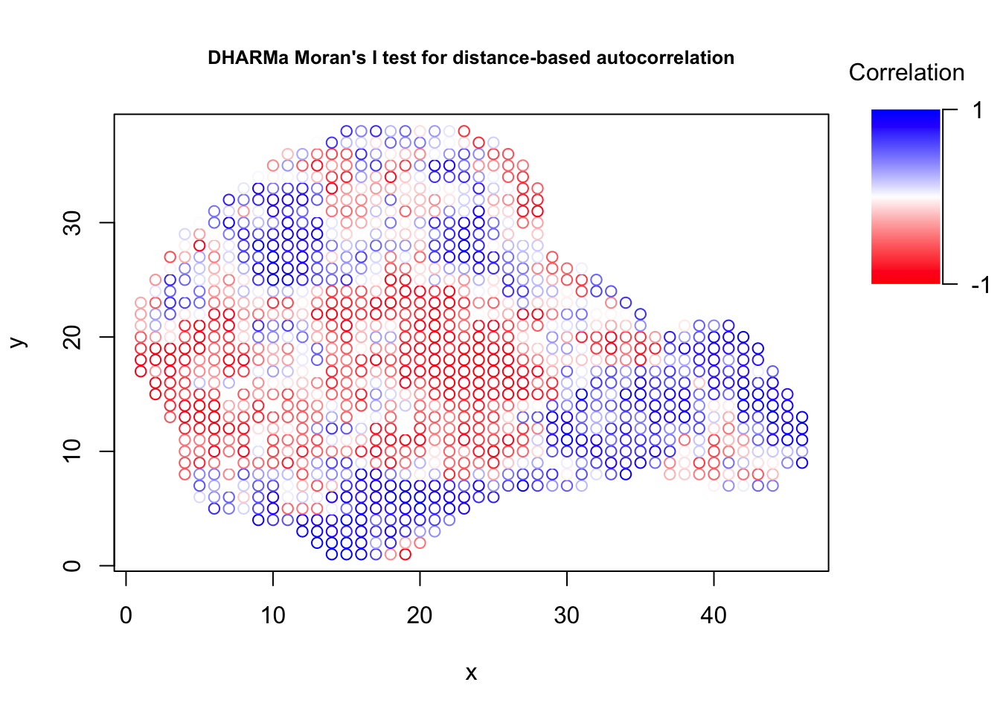
DHARMa Moran's I test for distance-based autocorrelation
data: res
observed = 0.12556787, expected = -0.00090334, sd = 0.00141608, p-value
< 2.2e-16
alternative hypothesis: Distance-based autocorrelation
If the spatial test is significant, we first de-trend with a 2D spline (as recommended in the spatial-correlation section - always de-trend before reaching for a correlation structure):
library(mgcv)fit2 =gam(snouter1.1~ rain + djungle +te(X, Y), data = snouter)res2 =simulateResiduals(fit2)testSpatialAutocorrelation(res2, x = snouter$X, y = snouter$Y)
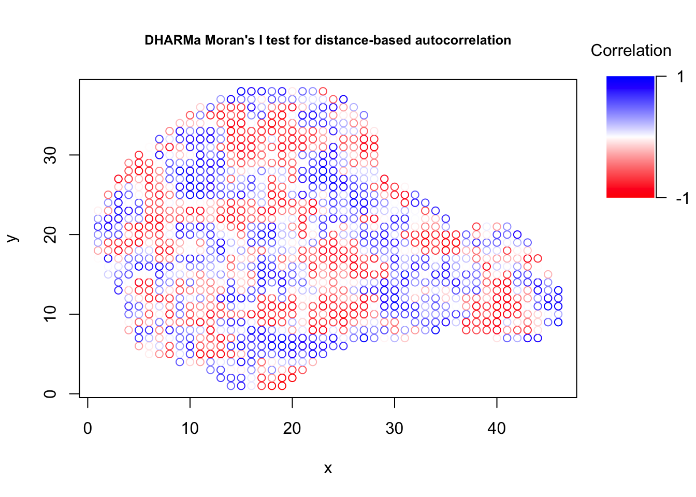
DHARMa Moran's I test for distance-based autocorrelation
data: res2
observed = 0.03162372, expected = -0.00090334, sd = 0.00141607, p-value
< 2.2e-16
alternative hypothesis: Distance-based autocorrelation
This changes residuals somewhat, but there is still significant spatial autocorrelation left. Thus, we have to move to a spatial model.
# TODO
C.8 Volcano Island
Option 2: Analyse ?volcanoisland in the EcoData package. Perform an appropriate causal statistical analysis (including residual checks and everything) to understand the predictors that determine the value of
windObs (numeric) lizards (1/0) beetles2 (counts) survived (k/n) There are various predictors, including plot, year, x, y that can be considered. Assume that all the issues that we talked about (RE, overdispersion, zero-inflation, spatial autocorrelation) could appear in this data.
Hint: it is possible that the possibility to observe a species depends on wind, and it is possible that lizards eat beetles, so you can also consider these variables (or predictions for these variables) as predictors of the others.
Hint 2: binomial k/n data in R is specified as a response that is cbind(k, n-k), so you would write glm(cbind(survived, all-survived) ~ predictor, data = data, family = “binomial”)
TipBase model
This is an open, integrative exercise, so the following is not a fully worked-out solution but a base model to start from for one of the responses (beetle counts). The other responses (windObs -> Gaussian / gls, lizards -> binomial, survived -> k/n binomial) follow exactly the same recipe.
library(EcoData); library(glmmTMB); library(DHARMa)d = volcanoisland# beetles: counts -> start with Poisson and plot as RE, then diagnosem0 =glmmTMB(beetles2 ~ windObs + lizards + (1|plot), family = poisson, data = d)res =simulateResiduals(m0); plot(res)
DHARMa:testOutliers with type = binomial may have inflated Type I error rates for integer-valued distributions. To get a more exact result, it is recommended to re-run testOutliers with type = 'bootstrap'. See ?testOutliers for details
DHARMa:testOutliers with type = binomial may have inflated Type I error rates for integer-valued distributions. To get a more exact result, it is recommended to re-run testOutliers with type = 'bootstrap'. See ?testOutliers for details
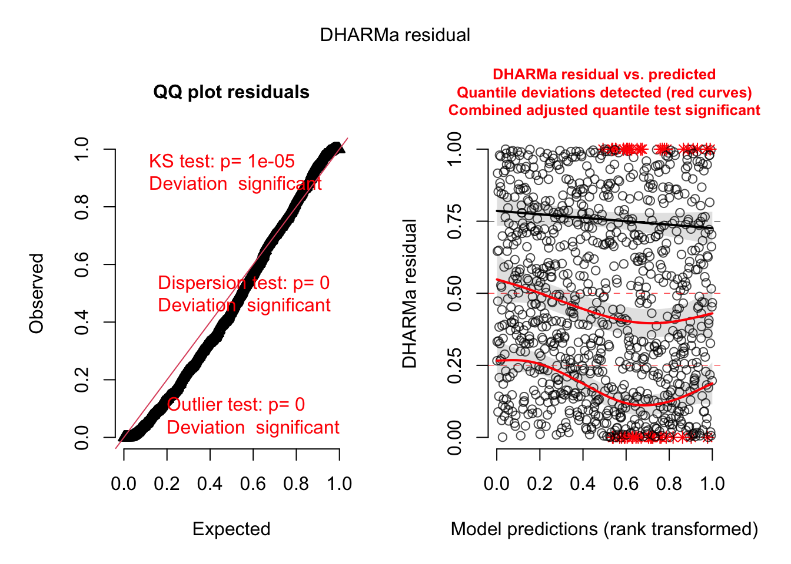
testDispersion(res); testZeroInflation(res)
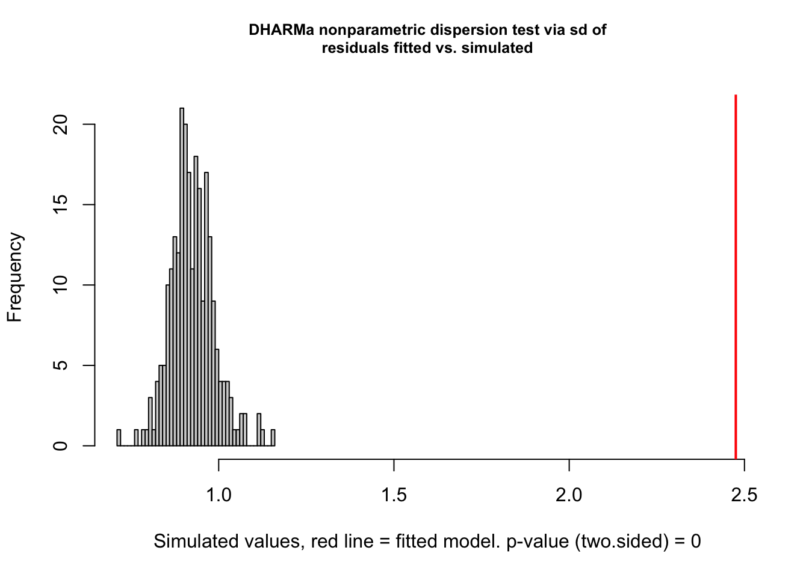
DHARMa nonparametric dispersion test via sd of residuals fitted vs.
simulated
data: simulationOutput
dispersion = 2.6752, p-value < 2.2e-16
alternative hypothesis: two.sided
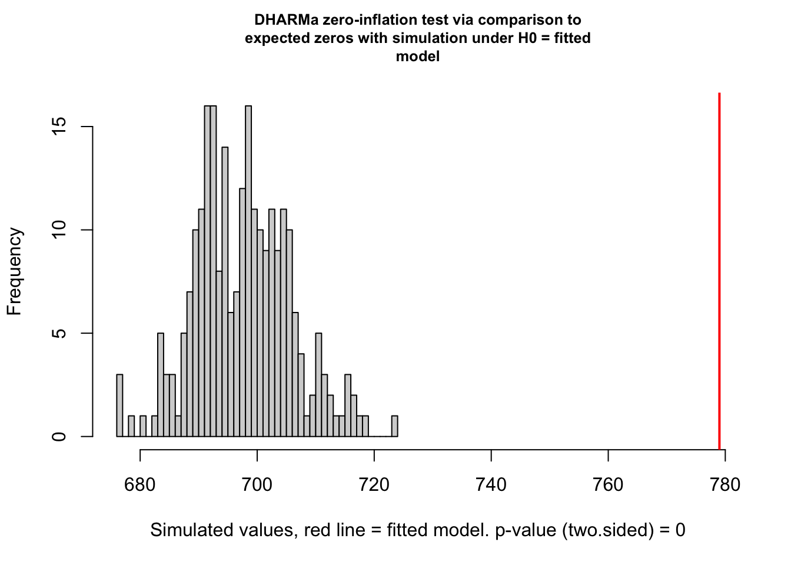
DHARMa zero-inflation test via comparison to expected zeros with
simulation under H0 = fitted model
data: simulationOutput
ratioObsSim = 1.1159, p-value < 2.2e-16
alternative hypothesis: two.sided
# if over-dispersed / zero-inflated -> negative binomial + ZI termm1 =glmmTMB(beetles2 ~ windObs + lizards + (1|plot),family = nbinom2, ziformula =~1, data = d)# then check for residual spatial autocorrelation on the coordinatesres1 =simulateResiduals(m1)grp =recalculateResiduals(res1, group = d$plot)testSpatialAutocorrelation(grp,x =aggregate(x ~ plot, d, mean)$x,y =aggregate(y ~ plot, d, mean)$y)
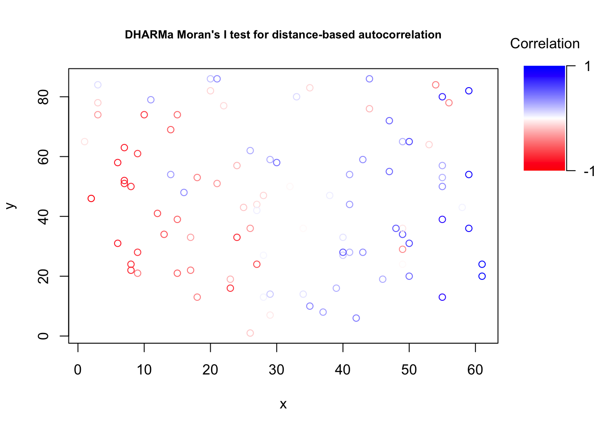
DHARMa Moran's I test for distance-based autocorrelation
data: grp
observed = 0.205367, expected = -0.010101, sd = 0.017216, p-value <
2.2e-16
alternative hypothesis: Distance-based autocorrelation
Work through the diagnostic ladder in order - functional form -> distribution -> dispersion -> zero-inflation -> correlation - adding structure only when a residual check demands it. Note the hint that lizards (predators) may belong in the beetle model, and that detectability may depend on windObs.